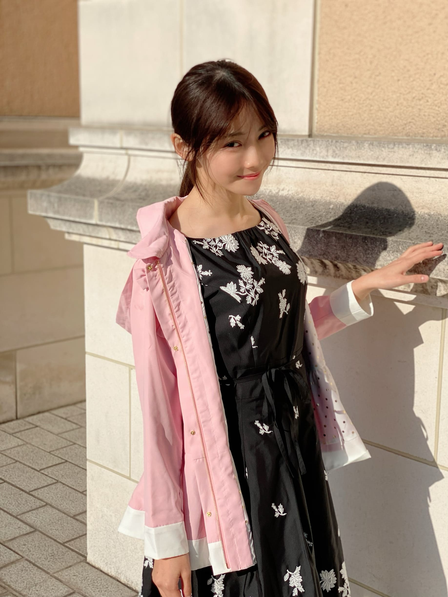
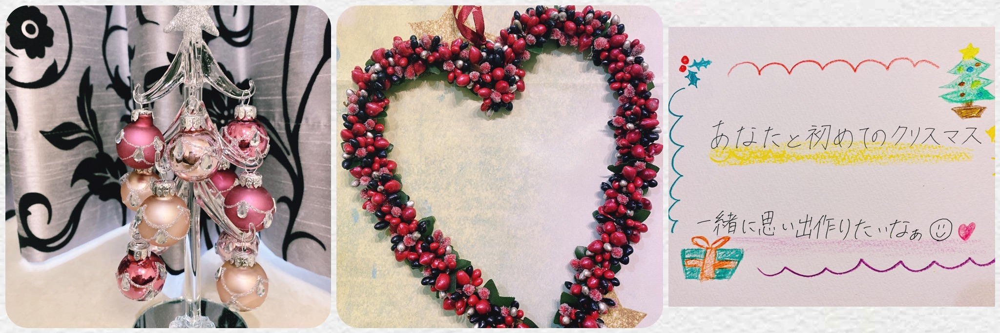
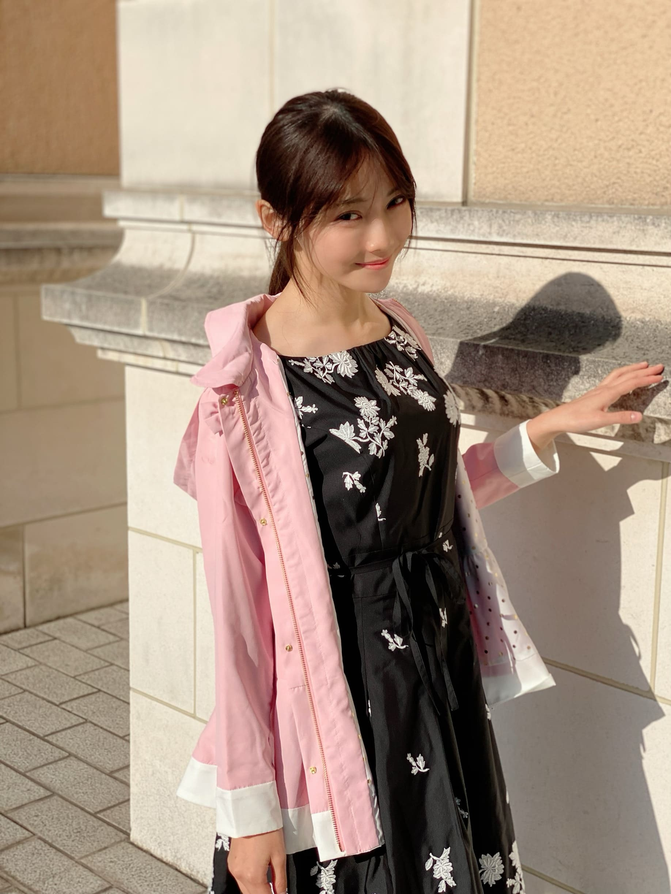
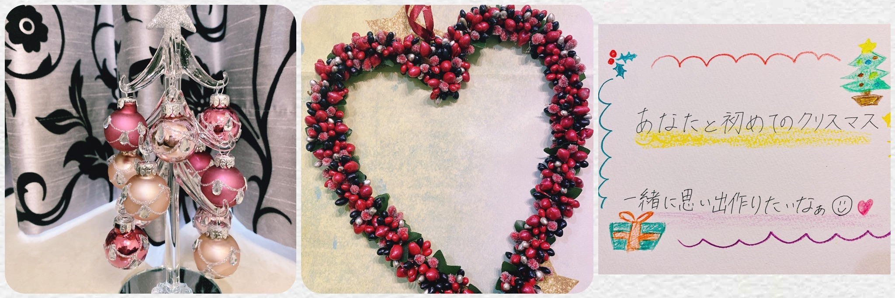

2020/1123Mon初めての4期生ライブ☺︎ 黒見明香(16)
連休最終日だね〜！今日も一日お疲れ様でした✩︎⡱
ココを見つけてくださり ありがとうございます♪
乃木坂46 新４期生の黒見明香です。
すこーしだけ自己紹介させてください☺︎
♪:*:･･:*:･･:*:･･:*:･･:*:･･:*:･♪:*:･･:*:･･:*:･･:*:･･:*:･･:*:･♪
黒見 明香（くろみ はるか）
2004年1月19日生まれ 16才
香港生まれ・東京都出身です
あだ名： くろみん・黒見ちゃん
3の倍数9・6・3(くろみ)
と覚えてもらえたら嬉しいです♪
＊
↓頂いたコメントから
◎また黒歴史コーナー復活させてください笑
未だに思い出すとドキドキ動悸が早くなってしまうのが...
乃木坂46時間TVでの「4期生打ち合わせ(オンライン)」で
私のマイクが入っていないことに全く気付かず、
「あの・・・あ、（喋りだし被っちゃった^^;;) お先にどうぞー！」
「私もぜひやってみたいな〜！」「それ良いねー」
などと独り言で、口をパクパクとしながら、
ニコニコ一人でボケ倒していました・・・( ´_ゝ`)
しばらく経って...スタッフさんに、
「えー、クロミさん？音声入っていませんよー。
マイクオンにしてくださいねー」と全体にお話があって、
ざわーーーっっ...て鳥肌がたって冷や汗が流れました・・Σ（ﾟдﾟll）
そんな日も・・・あるよね！？汗
♪:*:･･:*:･･:*:･･:*:･･:*:･･:*:･♪:*:･･:*:･･:*:･･:*:･･:*:･･:*:･♪

-:-:୨୧:-:- リクエスト頂いた、ハーフアップ編み込みしてみたよ〜☺︎いろいろな髪型チャレンジ中だよー♪
【 乃木坂46 4期生ライブ2020 発売開始✩︎⡱ 】
みんな身長も、グングン伸びてスタイルもカッコ良くて✨
⚫︎今回のシングルは新4期生として初だよね？
♪:*:･･:*:･･:*:･･:*:･･:*:･･:*:･♪:*:･･:*:･･:*:･･:*:･･:*:･･:*:･♪

-:-:୨୧:-:-リクエスト頂いた髪型、その② ポニテにまとめてみたけど、眩しくて秋の日差しに負けちゃいました\(//∇//)\
♪:*:･･:*:･･:*:･･:*:･･:*:･･:*:･♪:*:･･:*:･･:*:･･:*:･･:*:･･:*:･♪

-:-:୨୧:-:- 気が早いけれど、ちょこっとだけクリスマス風に飾って見たよ〜✨
⚫︎ハロウィーンがすぎると街はもうクリスマス一色......いやクリスマス三色ですね。ファンタスティック三色パン（笑）
♪:*:･･:*:･･:*:･･:*:･･:*:･･:*:･♪:*:･･:*:･･:*:･･:*:･･:*:･･:*:･♪
ブログやお手紙で、たくさんのコメントや感想送って下さり
本当にありがとうございます✩︎⡱
今回、初めてのコメントですー！というあなたも、
この間の話の続きだよー！というあなたも、
大切な時間を使ってお話しして下さり
本当にありがとうございます✨
あなたに出逢えた奇跡に、感謝しながら、
大事に、一つずつ全部読ませて頂いています((〃ω〃))
皆さんのことを知ることが出来る、
私の１日の中で『１番幸せな時間』です♩
直接お話しできる時が、 待ち遠しいです✩︎⡱
＊
寒い日が続いて、仕事や勉強が忙しかったり、
なんだか体調イマイチだよー、疲れちゃったよーって方も
本当に、お疲れ様でした✩︎⡱
きっと心も、身体も、しんどい時もあるかと思います。。
どうぞ、皆さんが 少しでも
ひとときリラックスできますように...✩︎⡱
と願っています(*´-`)
初めて会える日を、楽しみに待っています♪
＊
明日は「一緒にいると落ち着くぅ」と言ってくれる
◯取っていましたよー！取っていますよー\(//∇//)\笑
だって好きなんだもん。。
⚫︎握手会でこんな服着ようかな〜とかって考えていますか？
◯ありがとうございます！Don't think, Feel！ですね☺︎
♬ *。♩*。♬
⚫︎黒見ちゃん！って一言で言うとどんな人？
◯一言？うーん「明るいへっぽこ」かな(*´-`)？
⚫︎乃木坂の制服と歌衣装で着てみたいものを、それぞれいくつまででも構いません。
◯すごくたくさんあって、きっと皆んなと同じで思い入れも多いので、
♬ *。♩*。♬
＜ゲームコーナー✨＞
⚫︎プロスピの選択契約書は自分の使いたい選手をゲットするのもいいと思うよ！
◯そうだね！参考にして考えてみるね！
⚫︎ くろみんはプロスピseries2移行まで契約書貯めてたの？
◯まだ開封してないよ！楽しみだな〜☺︎
⚫︎ プロスピリーグランク何？
◯今、リーグランクは7だよ！
ランク上がりたいなぁー！なんか上がるコツとかあるのかな？
⚫︎ プロスピ、くろみんもいい選手が獲得出来ますように。
◯ありがとう！あなたも良い選手がでますように！
⚫︎ 黒見ちゃんはプロスピのオーダー守備と打撃だったらどっちを重視する？
◯あなたは守備なんだね！
難しいけど、私は打撃を重視するかなぁ！
みんなはどっち？
⚫︎ 黒見ちゃんはプロスピのミキサーどんどんやる派？貯める派？
◯ためてまとめて引くことが多いよ！
⚫︎ 乃木フェスでくろみんのカード当てたいのに全然当たらないよー！
◯当たって欲しいな！あなたのところに私のカードが出ますように☺︎
⚫︎ 乃木フェスでくろみんのSSR出ましたー！ananって書いてるカードです！
私はゲーム自体はよわよわなのですが、くろみんのカードGETできてとても嬉しいです！
◯おめでとう！！私も嬉しいな☺︎
⚫︎ 乃木フェス、特攻を殆ど持ってないから中々厳しい戦いになりそうだけど、何とか抽選券内には入りたいなーと思ってます。
◯乃木フェス3周年を支えてくれたあなたまずは3周年本当にありがとう！
頑張ってくれてるのを見るとすごく嬉しくなるよ！抽選券内入ってくれることを心から願ってるよ！
⚫︎ 乃木フェスでくろみん見れて幸せやった！
◯ゲーム内でも私を見て少しでも、幸せになってくれたら嬉しいな☺︎
⚫︎ 実際に神宮球場でプロ野球や大学野球見たことありますか？
1回だけ見たことあるよ！ホームランボールいつかとってみたいなぁ☺︎
⚫︎ 少し前のパ・リーグTVのサムネにDon'Think.Feelって書いてあったよ！それはホームランの動画なんだけどほんとにそんな感じのホームランだったよ...
◯その映像見たよ！サムネが気になってついつい押しちゃったよ！ホームラン凄かったよね！
♬ *。♩*。♬
・お怪我された方は（どうぞお大事にです><）
・会社の人と乃木坂を通じて仲良くなれたよーというエピソード（嬉しいです☺︎）
・乃木フェス黒見レーン頑張ってるよー！（ありがとう〜♡）
ココを見つけてくださり ありがとうございます♪
乃木坂46 新４期生の黒見明香です。
すこーしだけ自己紹介させてください☺︎
♪:*:･･:*:･･:*:･･:*:･･:*:･･:*:･♪:*:･･:*:･･:*:･･:*:･･:*:･･:*:･♪
黒見 明香（くろみ はるか）
2004年1月19日生まれ 16才
香港生まれ・東京都出身です
あだ名： くろみん・黒見ちゃん
3の倍数9・6・3(くろみ)
と覚えてもらえたら嬉しいです♪
＊
↓頂いたコメントから
◎また黒歴史コーナー復活させてください笑
今年何やらかしたかなぁ、と振り返っていて、
未だに思い出すとドキドキ動悸が早くなってしまうのが...
乃木坂46時間TVでの「4期生打ち合わせ(オンライン)」で
私のマイクが入っていないことに全く気付かず、
「あの・・・あ、（喋りだし被っちゃった^^;;) お先にどうぞー！」
「私もぜひやってみたいな〜！」「それ良いねー」
などと独り言で、口をパクパクとしながら、
ニコニコ一人でボケ倒していました・・・( ´_ゝ`)
しばらく経って...スタッフさんに、
「えー、クロミさん？音声入っていませんよー。
マイクオンにしてくださいねー」と全体にお話があって、
ざわーーーっっ...て鳥肌がたって冷や汗が流れました・・Σ（ﾟдﾟll）
そんな日も・・・あるよね！？汗
♪:*:･･:*:･･:*:･･:*:･･:*:･･:*:･♪:*:･･:*:･･:*:･･:*:･･:*:･･:*:･♪
-:-:୨୧:-:- リクエスト頂いた、ハーフアップ編み込みしてみたよ〜☺︎いろいろな髪型チャレンジ中だよー♪
【 乃木坂46 4期生ライブ2020 発売開始✩︎⡱ 】
ついに視聴チケットの発売が始まりましたー (*ˊᵕˋ*)੭
16人で力をあわせて、皆さんに"とっておきの楽しい時間✨"を
お届けできるよう、笑顔や幸せをお届けできるよう、
精一杯頑張ります♡ ぜひ楽しみにしてて下さいねー♪
＊
アフター配信では『アフターパジャマトーク』も予定しています〜✨
更に、みんなでセレクトした楽曲も披露するよー！
＊
⚫︎くろみんにとって4期生のメンバーはどんな存在ですか？15人分全員教えて欲しいです。
ライブまで今日合わせて残り３回！
大好きな４期生のこと、5人ずつ書かせてくださいね♪
大好きな４期生のこと、5人ずつ書かせてくださいね♪
◎遠藤さくらちゃん♡
小さなことにも喜びを発見していたり、心もまっすぐなさくちゃん。
体の使い方や魅せ方も美しくて、努力を続けている姿を尊敬しています。
◎賀喜遥香ちゃん♡
責任感が強くてかっこいいところと、繊細で優しくて女の子らしいところと、両方がすごく魅力的なかっきー。
間違えてしまった時にも、気づいて優しく教えてくれるあたたかさが大好きです。
◎掛橋沙耶香ちゃん♡
可愛いとカッコ良いの両面を持っていて、気さくにお話してくれる憧れのお姉さん。
ギターを弾いている姿も歌声も大好きです✨
＊
⚫︎ のぎおびで、くろみんにプレゼントとお手紙をもらったと、とても嬉しそうに話していました!
◯お手紙喜んでくれたのもすごく嬉しかったです〜((〃ω〃))
◎金川紗耶ちゃん♡
振り覚えも早くて、ダンスが映える美しいシルエットに見惚れてしまうやんちゃん。
天然で、内面も可愛らしいところも大好きです☺︎
◎北川悠理ちゃん♡
真っ直ぐで、声も可愛くて、ゆりちゃんにしか出来ないことが沢山あっていつも尊敬しています。ずっと変わらずお話してくれるのが嬉しくて心強いお姉さんです♬
♬ *。♩*。♬
⚫︎4期生あるあるあったら教えて欲しいな？
私がどんどん小ちゃくなってるように感じてるこの頃...\(//∇//)\笑
わたしにも成長期来るかなー！？
♬ *。♩*。♬
⚫︎4期生ライブ。「公約」、めっちゃ嬉しいです！
⚫︎公約は、やっぱりあのポーズ？
と思わせて「ヌンチャクをマイクにして歌うね！」と、想像の斜め上をゆくくろみんであった。（振りじゃないよ笑）
ヌンチャクマイク・・・ぜひいつか歌ってみたいですー(*´-`)
闘うアイドル...笑
ここをみてくれているあなたへの「公約」✨
ライブ直前会にこっそり書いちゃうので、待ってて下さいね☺︎
♬ *。♩*。♬
＜公演情報＞
乃木坂46 4期生ライブ 2020
【日程・時間】
2020年12月6日(日)
開場(配信開始) 16:00 ／ 開演(ライブ開始) 17:00 ／ 終演(ライブ終了) 19:00予定
2020年12月6日(日)
開場(配信開始) 16:00 ／ 開演(ライブ開始) 17:00 ／ 終演(ライブ終了) 19:00予定
♪:*:･･:*:･･:*:･･:*:･･:*:･･:*:･♪:*:･･:*:･･:*:･･:*:･･:*:･･:*:･♪

-:-:୨୧:-:- 2021年カレンダーのオフショットの一枚〜☺︎ 今晩23時までだよー！！
-:-:୨୧:-:- 2021年カレンダーのオフショットの一枚〜☺︎ 今晩23時までだよー！！
【 2021年カレンダー♡ 】
⚫︎くろみんの個別卓上カレンダー注文したよ？楽しみ～！
⚫︎くろみんの個別卓上カレンダー注文したよ？楽しみ～！
ありがとうございます((〃ω〃))
来年一緒に過ごせるの嬉しいなぁ〜✨
壁掛けカレンダーA・Bと
メンバー別の卓上カレンダーは・・・残りあと数時間><
＊
みんな、撮影頑張ってたので、
初めてのカレンダー✨
ぜひ、あなたの近くに置いてもらえたら嬉しいです (*ˊᵕˋ*)੭
＊
⚫︎今回のシングルは新4期生として初だよね？
もっともっと先輩方と距離縮めて仲良くなってほしいよ
本格的に参加させていただくのは初めてです。
いろいろとついていくのに必死だったり、
日々勉強することいっぱいですが、
ぜひ、乃木坂を応援してくださる皆さんに
愛していただける作品になるよう・・・
頑張っていますよーヾ(･ω･*)o
詳細待っててくださいね✨
やっぱり、全力投球ですー！☺︎笑
♪:*:･･:*:･･:*:･･:*:･･:*:･･:*:･♪:*:･･:*:･･:*:･･:*:･･:*:･･:*:･♪

-:-:୨୧:-:-リクエスト頂いた髪型、その② ポニテにまとめてみたけど、眩しくて秋の日差しに負けちゃいました\(//∇//)\
⚫︎黒見ちゃんのポニテの写真も見たいなぁー！ ぜひお願いします！
まとめてお散歩行ってみたよ〜 (*ˊᵕˋ*)੭
ほんとは春コートで、なおかつ密かに中学生から使ってるコート...汗
ショート丈になっても大丈夫そうかな？って着てみたけれど、
ちょっと子どもすぎちゃったかも！？笑
♪:*:･･:*:･･:*:･･:*:･･:*:･･:*:･♪:*:･･:*:･･:*:･･:*:･･:*:･･:*:･♪

-:-:୨୧:-:- ヘアスタイルその③✨冬っぽいまとめ髪してみたよ〜☺︎
-:-:୨୧:-:- ヘアスタイルその③✨冬っぽいまとめ髪してみたよ〜☺︎
⚫︎Wピースって指が4本立ってるよね。４期生のくろみちゃんにピッタリじゃん笑！
本当だー！ちょうど"4期生"ですね。
そしたら、ついカメラを向けられるとしてしまう
ワンパターンのWピースも
自信を持って？使っていきますね！
コメント、教えてくれてありがとうございますヾ(･ω･*)o
♪:*:･･:*:･･:*:･･:*:･･:*:･･:*:･♪:*:･･:*:･･:*:･･:*:･･:*:･･:*:･♪

-:-:୨୧:-:- 気が早いけれど、ちょこっとだけクリスマス風に飾って見たよ〜✨
⚫︎ハロウィーンがすぎると街はもうクリスマス一色......いやクリスマス三色ですね。ファンタスティック三色パン（笑）
上手いっ！笑 街がなんだか急にクリスマス、冬色になってて少し焦っちゃいますね(*´-`)
でも、なんだかキラキラして「12月だぁ」ってワクワクしちゃうのは私だけかなぁ？
今年は、乃木坂を一緒に歩いてくださる
あなたと出逢えて初めてのクリスマスです✩︎⡱
初めて会える日まで、まだ少し・・・
でも、とびっきりの想い出、いっぱい幸せつくれるよう
ぜひ、また見にきてくれたら嬉しいな (*ˊᵕˋ*)੭
⚫︎幼少期など黒見さんはサンタさんにどんなプレゼントのお願いをしていましたか。
⚫︎今年のクリスマスは何をお願いしますか？
小さい時は、「願いが叶うステッキ(自分で描いた図解入り)」など
⚫︎今年のクリスマスは何をお願いしますか？
小さい時は、「願いが叶うステッキ(自分で描いた図解入り)」など
存在しないものをお願いしていました\(//∇//)\
↓サンタさん珍回答エピソード！？☺︎笑
＊
今年は、向井葉月さん♡と約束した、
ゲームでフレンドになるために、、、
PSが欲しいなぁ..(お小遣い貯めてるの〜><）
と願っているのだけど、サンタさん厳しそうです☺︎笑
みんなは、何をお願いしてたのかなぁ・・・？
♪:*:･･:*:･･:*:･･:*:･･:*:･･:*:･♪:*:･･:*:･･:*:･･:*:･･:*:･･:*:･♪
ブログやお手紙で、たくさんのコメントや感想送って下さり
本当にありがとうございます✩︎⡱
今回、初めてのコメントですー！というあなたも、
この間の話の続きだよー！というあなたも、
大切な時間を使ってお話しして下さり
本当にありがとうございます✨
あなたに出逢えた奇跡に、感謝しながら、
大事に、一つずつ全部読ませて頂いています((〃ω〃))
皆さんのことを知ることが出来る、
私の１日の中で『１番幸せな時間』です♩
直接お話しできる時が、 待ち遠しいです✩︎⡱
＊
寒い日が続いて、仕事や勉強が忙しかったり、
なんだか体調イマイチだよー、疲れちゃったよーって方も
本当に、お疲れ様でした✩︎⡱
きっと心も、身体も、しんどい時もあるかと思います。。
どうぞ、皆さんが 少しでも
ひとときリラックスできますように...✩︎⡱
と願っています(*´-`)
初めて会える日を、楽しみに待っています♪
＊
明日は「一緒にいると落ち着くぅ」と言ってくれる
優しいお姉さん 璃果ちゃんですよ〜♬
読んでくださり、本当にありがとうございます☺︎
次回も、会えたら嬉しいなぁ✨
またねヾ(･ω･*)
くろみはるか☺︎
☆ 明日のあなたのラッキーナンバー：❼ と ❷
読んでくださり、本当にありがとうございます☺︎
次回も、会えたら嬉しいなぁ✨
またねヾ(･ω･*)
くろみはるか☺︎
☆ 明日のあなたのラッキーナンバー：❼ と ❷
（↑本日のラッキーナンバーだと残り時間が少ないよーとのコメント頂いて、次の日の占い方も勉強しましたー (*ˊᵕˋ*)੭ もしよかったら、参考にしてみてね✨）
♪:*:･･:*:･･:*:･･:*:･･:*:･･:*:･♪:*:･･:*:･･:*:･･:*:･･:*:･･:*:･♪
・
・
・
＜ちょこっとアンコール♬笑＞
〜クロミ・ル・フィーユ〜
（クロ見るFeel YOU☺︎）
↑コメントありがとうー！使ってみたよー♪
♬ *。♩*。♬
ココからおまけ、すっごく長いよ〜笑
楽屋裏でお喋りしてるような感じなので、
気が向いた時にでも〜↓☺︎
♬ *。♩*。♬
♪:*:･･:*:･･:*:･･:*:･･:*:･･:*:･♪:*:･･:*:･･:*:･･:*:･･:*:･･:*:･♪
・
・
・
＜ちょこっとアンコール♬笑＞
〜クロミ・ル・フィーユ〜
（クロ見るFeel YOU☺︎）
↑コメントありがとうー！使ってみたよー♪
♬ *。♩*。♬
ココからおまけ、すっごく長いよ〜笑
楽屋裏でお喋りしてるような感じなので、
気が向いた時にでも〜↓☺︎
♬ *。♩*。♬
⚫︎乃木坂に入る前はメンバーのメール取ってた？
◯取っていましたよー！取っていますよー\(//∇//)\笑
だって好きなんだもん。。
⚫︎握手会でこんな服着ようかな〜とかって考えていますか？
◯考えてるよー！ウインドウショッピングしていても、
「この服、初めての握手会で着てみたいなー♬」って
つい想像しちゃったりするんだよ〜！
♬ *。♩*。♬
⚫︎3年前の秋から筋トレをしているのですが、
何か始めるときは、日付と、内容をざっくりとでも
書いておくと継続できるよ！
◯アドバイス教えてくれてありがとうヾ(･ω･*)o
書いておくと継続できるよ！
◯アドバイス教えてくれてありがとうヾ(･ω･*)o
ブログやSHOWROOMにコメント下さった、
あなたのお名前をノートに書いていたり、
最近は、基礎代謝や骨格筋率をつけているよー笑
続くかな？頑張ります！
4期生ライブに向けて体力つけないいとだよね (*ˊᵕˋ*)੭
♬ *。♩*。♬
♬ *。♩*。♬
⚫︎ヌンチャクの練習用に良い動画ってありますか？どうやって練習始めたら良いか分からない...
◯皆さん上手でむずかしいよねー！
まずは自分の好きな技を見つけて「これ出来るようになりたいー✨」と思えるのを、ゆっくり(だったり鏡だったり)再生するアプリで見れるといいなぁ。。。
説明下手でごめんね><
テレビ見ながらや、歌いながらなど、くるくるしていると
縄跳びみたく、急にコツを掴めるようになるらしいです。
私も修行中だよー！一緒に頑張ろうね (*ˊᵕˋ*)੭
♬ *。♩*。♬
⚫︎好きなおでんの具は何ですか？
⚫︎好きなおでんの具は何ですか？
◯玉子と大根が大好きです(*´-`)
もち巾着も好きですー！お餅が出て溶けちゃったりしますよね笑
冬のおでん美味しいですよね〜
もち巾着も好きですー！お餅が出て溶けちゃったりしますよね笑
冬のおでん美味しいですよね〜
＊
⚫︎バスラBD.DVDが出るんだね。くろみんが挨拶する時にけっこう頑張って叫んだけど入ってるかな？笑
緊張で震えながら立ってる時、声が聞こえましたー！
真夏さん♡が教えてくださった通り、乃木坂のファンの皆さんは本当に優しくて、すごくすごく勇気をいただきました (*ˊᵕˋ*)੭ いつもありがとうございます✨
♬ *。♩*。♬
⚫︎BOØWY を聴かれて暫く経つと思いますが、お気に入りの曲は、見つかりましたか？笑
LAST GIGSがライブアルバムだったこともあり、MCもとっても印象的で『センキューぅ』という言い方を真似していたら、、、工事中のスタッフの皆様が爆笑していらっしゃいました\(//∇//)\笑
⚫︎BOØWY を聴かれて暫く経つと思いますが、お気に入りの曲は、見つかりましたか？笑
LAST GIGSがライブアルバムだったこともあり、MCもとっても印象的で『センキューぅ』という言い方を真似していたら、、、工事中のスタッフの皆様が爆笑していらっしゃいました\(//∇//)\笑
＊
⚫︎試行錯誤で悩む時は「考えない」のもやり方の1つだよ
⚫︎試行錯誤で悩む時は「考えない」のもやり方の1つだよ
◯ありがとうございます！Don't think, Feel！ですね☺︎
＊
⚫︎インスタグラムで黒見ファンクラブ開始したいです、いいですか？？(*^^*)
すごいねー！嬉しいなぁ、ありがとう (*ˊᵕˋ*)੭ ✨
♬ *。♩*。♬
＜悩んでいるあなたに☺︎＞
⚫︎僕が心が沈んだ時に響く言葉があります。
"自分はいらないんじゃないかと思うことより、ここにいたいと思うことの方がずっと大変なんだ。疲れたり迷ったりするのも至極自然なことじゃないか"
"自分はいらないんじゃないかと思うことより、ここにいたいと思うことの方がずっと大変なんだ。疲れたり迷ったりするのも至極自然なことじゃないか"
⚫︎自転車は、「視線を前に向ける」「ふらついても漕ぎ続ける」のが大事と聞いて、何度も練習しました!今思うと、なんだか色々な事に通じそうです...
◯ステキなお話聞かせて下さってありとうございます。
いろいろ落ち込んじゃったり、悩んじゃったよー！て方も、何かの元気が出るきっかけになったら嬉しいなぁ。。。一緒に頑張ろうね (*ˊᵕˋ*)੭ ✨
♬ *。♩*。♬
⚫︎黒見ちゃん！って一言で言うとどんな人？
◯一言？うーん「明るいへっぽこ」かな(*´-`)？
♬ *。♩*。♬
⚫︎乃木坂の制服と歌衣装で着てみたいものを、それぞれいくつまででも構いません。
◯すごくたくさんあって、きっと皆んなと同じで思い入れも多いので、
ちょこっとだけ書かせてねヾ(･ω･*)o
制服は 走れ！Bicycleのブラウスや、ガールズルールのセーラー、命は美しい、帰り道は遠回りしたくなる、Sing Out!の制服・・・等がすごく印象に残っていて、大好きです。
どの制服も、その時着ていらっしゃった
先輩方のお姿思い浮かぶので、
自分が着てみたいは畏れ多くて、
なかなか想像つかなくて・・・
答えが遅くなってごめんね((〃ω〃))
＊
だいたいぜんぶ展も本当に感動しました✨
きっと皆んなとおんなじだよね？☺︎
（＊歌衣装は、また今度書かせてね！）
♬ *。♩*。♬
＜ゲームコーナー✨＞
⚫︎プロスピの選択契約書は自分の使いたい選手をゲットするのもいいと思うよ！
◯そうだね！参考にして考えてみるね！
⚫︎ くろみんはプロスピseries2移行まで契約書貯めてたの？
◯まだ開封してないよ！楽しみだな〜☺︎
⚫︎ プロスピリーグランク何？
◯今、リーグランクは7だよ！
ランク上がりたいなぁー！なんか上がるコツとかあるのかな？
⚫︎ プロスピ、くろみんもいい選手が獲得出来ますように。
◯ありがとう！あなたも良い選手がでますように！
⚫︎ 黒見ちゃんはプロスピのオーダー守備と打撃だったらどっちを重視する？
◯あなたは守備なんだね！
難しいけど、私は打撃を重視するかなぁ！
みんなはどっち？
⚫︎ 黒見ちゃんはプロスピのミキサーどんどんやる派？貯める派？
◯ためてまとめて引くことが多いよ！
⚫︎ 乃木フェスでくろみんのカード当てたいのに全然当たらないよー！
◯当たって欲しいな！あなたのところに私のカードが出ますように☺︎
⚫︎ 乃木フェスでくろみんのSSR出ましたー！ananって書いてるカードです！
私はゲーム自体はよわよわなのですが、くろみんのカードGETできてとても嬉しいです！
◯おめでとう！！私も嬉しいな☺︎
⚫︎ 乃木フェス、特攻を殆ど持ってないから中々厳しい戦いになりそうだけど、何とか抽選券内には入りたいなーと思ってます。
◯乃木フェス3周年を支えてくれたあなたまずは3周年本当にありがとう！
頑張ってくれてるのを見るとすごく嬉しくなるよ！抽選券内入ってくれることを心から願ってるよ！
⚫︎ 乃木フェスでくろみん見れて幸せやった！
◯ゲーム内でも私を見て少しでも、幸せになってくれたら嬉しいな☺︎
⚫︎ 実際に神宮球場でプロ野球や大学野球見たことありますか？
1回だけ見たことあるよ！ホームランボールいつかとってみたいなぁ☺︎
⚫︎ 少し前のパ・リーグTVのサムネにDon'Think.Feelって書いてあったよ！それはホームランの動画なんだけどほんとにそんな感じのホームランだったよ...
◯その映像見たよ！サムネが気になってついつい押しちゃったよ！ホームラン凄かったよね！
♬ *。♩*。♬
◎氣志團さん、Creepy Nutsさん、UVERworldさん、PUFFYさん、one directionさん、サザンオールスターズさん、爆風スランプさん、など今回もステキないま聴きたくなる曲教えてくれてありがとうー！
◎野球のテストや最後のマラソンのお話、試験だよー！物理ピーンチも(私も！一緒にがんばろー!!）課題やレポート書くの頑張るよーというあなたも、自炊頑張ってるよー、乃木フェスでカードGETしたよー！という嬉しい報告も、ありがとう！一緒に頑張れたら嬉しいなー☺︎
◎野球のテストや最後のマラソンのお話、試験だよー！物理ピーンチも(私も！一緒にがんばろー!!）課題やレポート書くの頑張るよーというあなたも、自炊頑張ってるよー、乃木フェスでカードGETしたよー！という嬉しい報告も、ありがとう！一緒に頑張れたら嬉しいなー☺︎
◎野生動物のお話、SDガンダム三国伝、サモハンキンポーさん、映画魔女見習いを探してのこと、爪楊枝ロボ、勿忘草の素敵な名前、電車通学のお話も、ピザの日のこと、ジーパンの花言葉笑、ニコラ・テスラさんの3・6・9のお話、ブルース・リーさん似てる方のエピソード、ミリオンラブのお話、四月は君の嘘のこと、飼育係のお話、宇宙飛行士のお話、天体のランデブーのこと、人狼ゲームのこと、キョウカイのこと、沢山のコメントありがとうございます。一つ一つ大切に、嬉しく読ませて頂いたよ♬
・お怪我された方は（どうぞお大事にです><）
・会社の人と乃木坂を通じて仲良くなれたよーというエピソード（嬉しいです☺︎）
・乃木フェス黒見レーン頑張ってるよー！（ありがとう〜♡）
・留学生の子とお話しできたよーていう嬉しい後日談もありがとうー！
保湿グッズ、また紹介させてね✩︎⡱
♬ *。♩*。♬
そして、、、あなたのお誕生日、教えてくれてありがとう〜☺︎
お誕生日を迎えるあなたへ・・
✨HAPPY BIRTHDAY✨
どうぞ素敵な一年になりますよう✩︎⡱
♪:*:･･:*:･･:*:･･:*:･･:*:･･:*:･♪:*:･･:*:･･:*:･･:*:･･:*:･･:*:･♪
ここまで読んでくださったアナタ、ほんとうにありがとう♡
またねヾ(･ω･*)
お誕生日を迎えるあなたへ・・
✨HAPPY BIRTHDAY✨
どうぞ素敵な一年になりますよう✩︎⡱
♪:*:･･:*:･･:*:･･:*:･･:*:･･:*:･♪:*:･･:*:･･:*:･･:*:･･:*:･･:*:･♪
ここまで読んでくださったアナタ、ほんとうにありがとう♡
またねヾ(･ω･*)
2020/11/23 18:06
コメント(260)
ライブ見るよ！
くろみん♡
こんばんは♬
１回ぎゅっと寒くなったと思ったら
夏日が舞い戻ってきて
体調を崩しました。
春先とか梅雨どきとか
気候が微妙な時期には、すぐコケてしまう。
自分で自分が情けないッス。
紅葉狩りに行くには絶好の連休だったけど
とにかく寝て、回復に努めつつ
4期生ライブの観覧チケットを購入してきたよ。
16人はもうすでに一体感でいっぱいだけど
このライブを通してみんながさらに
まとまってくれたらいいな。
くろみん♡のパフォーマンス楽しみにしています。
ホントに久しぶりの紫×緑を
ライブでやってみようと思います。
この色を受け継いでくれること
すごくうれしく思っているよ。
新型コロナの感染者数。
大阪は東京を上回っていて
これまでは「きちんと対策すれば大丈夫」って
思っていたけど
体調を崩すと要らない心配してしまうよね。
元気でいようと思ったよ。
努力、感謝、笑顔。
では、きっとまた。
おやすみ
浪速の商人（あきんど）
こんばんは♬
１回ぎゅっと寒くなったと思ったら
夏日が舞い戻ってきて
体調を崩しました。
春先とか梅雨どきとか
気候が微妙な時期には、すぐコケてしまう。
自分で自分が情けないッス。
紅葉狩りに行くには絶好の連休だったけど
とにかく寝て、回復に努めつつ
4期生ライブの観覧チケットを購入してきたよ。
16人はもうすでに一体感でいっぱいだけど
このライブを通してみんながさらに
まとまってくれたらいいな。
くろみん♡のパフォーマンス楽しみにしています。
ホントに久しぶりの紫×緑を
ライブでやってみようと思います。
この色を受け継いでくれること
すごくうれしく思っているよ。
新型コロナの感染者数。
大阪は東京を上回っていて
これまでは「きちんと対策すれば大丈夫」って
思っていたけど
体調を崩すと要らない心配してしまうよね。
元気でいようと思ったよ。
努力、感謝、笑顔。
では、きっとまた。
おやすみ
浪速の商人（あきんど）
くろみんこんばんは。
今日は自分はお仕事でした。
先ほどお仕事が終わりました。
土曜日から今日まで世間一般では
３連休だったと思いますが、
自分はお仕事でした。
３連休という事で仕事の量が多かったです。
人の移動があった気がして
それに影響されて仕事の量が多かったです。
コロナ前の週末の量に戻った気がします。
めちゃくちゃこの３日間お仕事大変でした。
でも何とか乗り切る事が出来ました。
くろみんのブログに癒されたし、
くろみんのブログを読むことを
モチベーションにして
何とか乗り切れました。
くろみんありがとう。
◎今日はくろみんのブログ更新日だね。
ブログ更新してくれてありがとう。
またあっという間にくろみんのブログの
更新日が来た気がします。
時が経つのは早いなぁと思います。
今回のブログも最初から最後まで読みました。
いいブログだと思いました。
今回のブログについてコメントします。
●コメントについて答えているね。
黒歴史コーナーが載っているけど、
４６時間TVの時の打ち合わせの
マイク事件懐かしいなぁと思いました。
●リクエストにちゃんと答えていて
すごいなぁと思いました。
ハーフアップの編み込みしている
くろみんが載っているけど、
くろみん可愛いなぁと思いました。
可愛すぎです。
髪型めちゃくちゃ似合っています。
色々な髪型にチャレンジ中なんだね。
どんな髪型をしても似合うと思います。
●４期生ライブの視聴チケットの
販売が始まったね。
忘れずに買わなきゃ・・・と思いました。
４期生ライブ楽しみにしています。
アフター配信では「アフターパジャマトーク」
が予定されているんだね。
セレクトした楽曲も披露するんだね。
アフター配信楽しみです。
自分は去年の横浜アリーナでの
４期生ライブに参加しました。
素晴らしいパフォーマンスで
圧倒された経験があります。
そこからパワーアップされた姿を
観るのを楽しみにしています。
くろみんも４期生のダンスレベル高いと
思うけど、
ついていけるといいなぁと思いました。
リハ頑張ってね。
本番で
素晴らしいパフォーマンスが出来ますように。
応援しています。
それではこの辺で。
またコメントします。
今日は自分はお仕事でした。
先ほどお仕事が終わりました。
土曜日から今日まで世間一般では
３連休だったと思いますが、
自分はお仕事でした。
３連休という事で仕事の量が多かったです。
人の移動があった気がして
それに影響されて仕事の量が多かったです。
コロナ前の週末の量に戻った気がします。
めちゃくちゃこの３日間お仕事大変でした。
でも何とか乗り切る事が出来ました。
くろみんのブログに癒されたし、
くろみんのブログを読むことを
モチベーションにして
何とか乗り切れました。
くろみんありがとう。
◎今日はくろみんのブログ更新日だね。
ブログ更新してくれてありがとう。
またあっという間にくろみんのブログの
更新日が来た気がします。
時が経つのは早いなぁと思います。
今回のブログも最初から最後まで読みました。
いいブログだと思いました。
今回のブログについてコメントします。
●コメントについて答えているね。
黒歴史コーナーが載っているけど、
４６時間TVの時の打ち合わせの
マイク事件懐かしいなぁと思いました。
●リクエストにちゃんと答えていて
すごいなぁと思いました。
ハーフアップの編み込みしている
くろみんが載っているけど、
くろみん可愛いなぁと思いました。
可愛すぎです。
髪型めちゃくちゃ似合っています。
色々な髪型にチャレンジ中なんだね。
どんな髪型をしても似合うと思います。
●４期生ライブの視聴チケットの
販売が始まったね。
忘れずに買わなきゃ・・・と思いました。
４期生ライブ楽しみにしています。
アフター配信では「アフターパジャマトーク」
が予定されているんだね。
セレクトした楽曲も披露するんだね。
アフター配信楽しみです。
自分は去年の横浜アリーナでの
４期生ライブに参加しました。
素晴らしいパフォーマンスで
圧倒された経験があります。
そこからパワーアップされた姿を
観るのを楽しみにしています。
くろみんも４期生のダンスレベル高いと
思うけど、
ついていけるといいなぁと思いました。
リハ頑張ってね。
本番で
素晴らしいパフォーマンスが出来ますように。
応援しています。
それではこの辺で。
またコメントします。
可愛いなぁ
くろみん、
お疲れ様＆ブログありがとう。
色々な髪型、良いでね！ありがとう。それにしても可愛いすぎる！どの髪型もね！
今度、お団子してください。
それから、チラッと、ダブルピースの写真有りますね！（笑）
四期生ライブ、楽しみでしょうがない。
どんなステージになるのか？どんな曲を歌うのか？本当、楽しみです！
はーちゃん（おがちゃん）
お疲れ様＆ブログありがとう。
色々な髪型、良いでね！ありがとう。それにしても可愛いすぎる！どの髪型もね！
今度、お団子してください。
それから、チラッと、ダブルピースの写真有りますね！（笑）
四期生ライブ、楽しみでしょうがない。
どんなステージになるのか？どんな曲を歌うのか？本当、楽しみです！
はーちゃん（おがちゃん）
くろみん
お疲れさま！
今日はだいぶ早いタイミングでコメント出来るみたい
4期生ライブ、楽しみだね！
グッズも出るみたいだけど、くろみん的に一番オススメのグッズってどんなの？
情報解禁になってからでいいから、教えて
のぎおびも順番にやるんだってね！
くろみんの番、いつになるんだろう？
ブログで告知できるタイミングなのかな？
それとも、またブログの順番の日に配信なのかな？
ブログ配信の日だったら、また一つ記念日増えるね☆
仕事も学校も忙しい時期だろうけど、頑張って乗り切ってね
一気に慣れないことが増えた1年も、ライブ終わったらあっという間に紅白、年明けだろうから、コロナ&風邪&インフルには気をつけてね
お疲れさま！
今日はだいぶ早いタイミングでコメント出来るみたい
4期生ライブ、楽しみだね！
グッズも出るみたいだけど、くろみん的に一番オススメのグッズってどんなの？
情報解禁になってからでいいから、教えて
のぎおびも順番にやるんだってね！
くろみんの番、いつになるんだろう？
ブログで告知できるタイミングなのかな？
それとも、またブログの順番の日に配信なのかな？
ブログ配信の日だったら、また一つ記念日増えるね☆
仕事も学校も忙しい時期だろうけど、頑張って乗り切ってね
一気に慣れないことが増えた1年も、ライブ終わったらあっという間に紅白、年明けだろうから、コロナ&風邪&インフルには気をつけてね
くろみちゃんこんにちは！
今日はキムチ鍋を作って食べました〜〜o( ^_^ )o♡♡
くろみちゃんはお鍋だと何鍋が好き〜？
4期ライブ今からどうなるかワクワクドキドキする！
くろみちゃんのキラキラ笑顔もパフォーマンスしてる姿も全部全部見どころだね！頑張ってね〜！
最近、ハイキューの漫画全巻買ったんだ〜！今は10巻まで見た！
アニメも面白いけど、原作だと細かいところまで見れるからもっと面白い！今のマイブームはハイキューなんだ〜〜( ^ o ^ )！
くろみちゃん大好きだよ〜！( ^ o ^ )♡♡
今日はキムチ鍋を作って食べました〜〜o( ^_^ )o♡♡
くろみちゃんはお鍋だと何鍋が好き〜？
4期ライブ今からどうなるかワクワクドキドキする！
くろみちゃんのキラキラ笑顔もパフォーマンスしてる姿も全部全部見どころだね！頑張ってね〜！
最近、ハイキューの漫画全巻買ったんだ〜！今は10巻まで見た！
アニメも面白いけど、原作だと細かいところまで見れるからもっと面白い！今のマイブームはハイキューなんだ〜〜( ^ o ^ )！
くろみちゃん大好きだよ〜！( ^ o ^ )♡♡
わしも 好きや 笑 。。
くろみんお疲れ様
チェキが当たったきよたです。
ハーフアップ編み込みすごくかわいいです！
例えるなら去年の3-4期ライブ初日の与田ちゃんのハーフアップに負けずのかわいさです！
それとクリスマスの飾りも色使いが綺麗なのですが、お家？お部屋？のカーテンの柄が凄くいいですね！
（意図と違うところ見てごめんねー）
くろみんのカレンダーもオーダーしたよ
自分のグッズが出るのって嬉しいと思うけど最初は恥ずかしかったりするのかな～？
あとね、くろみんファンの総称って決まってるけどまだ発表してないのか、まだ決まってないのかどっちだろ
もしまだ決まってなかったら
〇くろみ（くろみん）イズム 意味（主義・主張）
〇くろみネーション 意味（国家・民族）
はいかがでしょうか？
言いやすくて語呂も良いかなって思って今更ですが送ってみました
ライブの練習もお疲れ様です。今回もありがとう
チェキが当たったきよたです。
ハーフアップ編み込みすごくかわいいです！
例えるなら去年の3-4期ライブ初日の与田ちゃんのハーフアップに負けずのかわいさです！
それとクリスマスの飾りも色使いが綺麗なのですが、お家？お部屋？のカーテンの柄が凄くいいですね！
（意図と違うところ見てごめんねー）
くろみんのカレンダーもオーダーしたよ
自分のグッズが出るのって嬉しいと思うけど最初は恥ずかしかったりするのかな～？
あとね、くろみんファンの総称って決まってるけどまだ発表してないのか、まだ決まってないのかどっちだろ
もしまだ決まってなかったら
〇くろみ（くろみん）イズム 意味（主義・主張）
〇くろみネーション 意味（国家・民族）
はいかがでしょうか？
言いやすくて語呂も良いかなって思って今更ですが送ってみました
ライブの練習もお疲れ様です。今回もありがとう
くろみんブログ更新ありがとう！今乃木フェスが超マイブームなので頑張ってます！！！まだ課題終わってないのにやっちゃいます(笑)楽しいです！！
先日、初めて宝塚を観に行きました！本っ当に素敵だったので是非くろみんも観て欲しいな！忙しいだろうけど、いつかぜひ！行ってみてください！！！
またコメントします！ありがとう！
先日、初めて宝塚を観に行きました！本っ当に素敵だったので是非くろみんも観て欲しいな！忙しいだろうけど、いつかぜひ！行ってみてください！！！
またコメントします！ありがとう！
黒見ちゃん、こんばんは♪
初めてコメントします｡
まずは4期生ライブ開催と、紅白出場おめでとう(*^ω^*)
年末に向けて忙しくなると思うけど、頑張ってくださいね♪
ブログにサザンオールスターズさんの名前があったので、僕からも今聴きたくなるオススメの曲を紹介させてください。
自分は名前の通り、サザンオールスターズさんの大ファンです♪
もうすぐ冬なので、これからの季節にぴったりなオススメの曲があります♪
それはサザンオールスターズの桑田佳祐さんのソロ曲「白い恋人達」です｡
YouTubeでミュージックビデオ付き（Full ver.）で公開されているので、機会があったらぜひ聴いてみてください♪
YouTubeで「白い恋人達」と検索すれば出てきますよ♪
とても癒されます！
⭐︎質問⭐︎
サザンオールスターズさんの曲で好きな曲ってありますか？
答えてくれると嬉しいです(^ ^)
コメント読んでくれてありがとう♪
体調に気をつけてお過ごしください。
またコメントします｡
サザンオールスターズのTシャツ（ちぃ君）
初めてコメントします｡
まずは4期生ライブ開催と、紅白出場おめでとう(*^ω^*)
年末に向けて忙しくなると思うけど、頑張ってくださいね♪
ブログにサザンオールスターズさんの名前があったので、僕からも今聴きたくなるオススメの曲を紹介させてください。
自分は名前の通り、サザンオールスターズさんの大ファンです♪
もうすぐ冬なので、これからの季節にぴったりなオススメの曲があります♪
それはサザンオールスターズの桑田佳祐さんのソロ曲「白い恋人達」です｡
YouTubeでミュージックビデオ付き（Full ver.）で公開されているので、機会があったらぜひ聴いてみてください♪
YouTubeで「白い恋人達」と検索すれば出てきますよ♪
とても癒されます！
⭐︎質問⭐︎
サザンオールスターズさんの曲で好きな曲ってありますか？
答えてくれると嬉しいです(^ ^)
コメント読んでくれてありがとう♪
体調に気をつけてお過ごしください。
またコメントします｡
サザンオールスターズのTシャツ（ちぃ君）
くろみんブログ更新ありがとうー！
くろみんもパ・リーグTVみたんだ！あれはほんとに凄かったー…
日本シリーズ土曜日から始まったね！ちょっとソフトバンクが強すぎるけど、ぼくは巨人応援してます！なんとか意地見せてほしいです！
4期生ライブ楽しみにしてます！来週ののぎおびも楽しみです！
4期生のみんなのパフォーマンスたのしみです！
土曜日模試があったんだけど、あまり手応え良くないです…最後の模試だったので少しショックですが切り替えてこれから勉強より一層がんばります！応援してくれるとうれしいな！
プロスピのイベントが大変で終わる気がしないよー笑
なんとか終わらせられるように頑張るけど無理っぽかったらガチャでOBの選手取ります！【単発で】多分無理だけど笑
ブログまた楽しみにしてます！
質問
これから冬の季節になるけど、くろみんはスキー滑れる？？
またねー！
くろみんもパ・リーグTVみたんだ！あれはほんとに凄かったー…
日本シリーズ土曜日から始まったね！ちょっとソフトバンクが強すぎるけど、ぼくは巨人応援してます！なんとか意地見せてほしいです！
4期生ライブ楽しみにしてます！来週ののぎおびも楽しみです！
4期生のみんなのパフォーマンスたのしみです！
土曜日模試があったんだけど、あまり手応え良くないです…最後の模試だったので少しショックですが切り替えてこれから勉強より一層がんばります！応援してくれるとうれしいな！
プロスピのイベントが大変で終わる気がしないよー笑
なんとか終わらせられるように頑張るけど無理っぽかったらガチャでOBの選手取ります！【単発で】多分無理だけど笑
ブログまた楽しみにしてます！
質問
これから冬の季節になるけど、くろみんはスキー滑れる？？
またねー！
くろみちゃんこんばんは〜！(^^)
ブログ更新ありがとう⸜❤︎⸝
もう5日経ったのかと思うとなんだか早い！( ´͈ ᵕ `͈ )
また今週も頑張れるよ〜～
4期生ライブ、アフタートーク付きのやつ購入しました！！
パジャマトーク(*¨*)どんな感じなんだろう〜今から楽しみ！私も4期生になったつもりで話聞いて楽しんじゃお( • •)❤︎笑
私も12月だいすき！クリスマスがあったり、年末の行事とか街の雰囲気とか……なんかワクワクしちゃう(^^♪笑
もう2020年も終盤って考えるとなんか1年早すぎて怖いよー！笑
2021年は、くろみちゃんに会いに行けますように……♡
前回の質問！保湿グッズのこと覚えててくれてありがとう(；_；)いつか教えてもらえるの楽しみにしてるね⸜❤︎⸝
乾燥する冬、一緒に乗り越えよう～～(；_；)
こんな長くコメント書いちゃってごめんね(^^;
いつも読んでくれてありがとう♡
今日も幸せなブログをありがとう〜～！( ˆ ˆ )/♡
また次のブログも楽しみにしてるね！❁.
ブログ更新ありがとう⸜❤︎⸝
もう5日経ったのかと思うとなんだか早い！( ´͈ ᵕ `͈ )
また今週も頑張れるよ〜～
4期生ライブ、アフタートーク付きのやつ購入しました！！
パジャマトーク(*¨*)どんな感じなんだろう〜今から楽しみ！私も4期生になったつもりで話聞いて楽しんじゃお( • •)❤︎笑
私も12月だいすき！クリスマスがあったり、年末の行事とか街の雰囲気とか……なんかワクワクしちゃう(^^♪笑
もう2020年も終盤って考えるとなんか1年早すぎて怖いよー！笑
2021年は、くろみちゃんに会いに行けますように……♡
前回の質問！保湿グッズのこと覚えててくれてありがとう(；_；)いつか教えてもらえるの楽しみにしてるね⸜❤︎⸝
乾燥する冬、一緒に乗り越えよう～～(；_；)
こんな長くコメント書いちゃってごめんね(^^;
いつも読んでくれてありがとう♡
今日も幸せなブログをありがとう〜～！( ˆ ˆ )/♡
また次のブログも楽しみにしてるね！❁.
くろみん ありがとーー！
さぁちゃんがくろみんが手紙くれたって
めっちゃ喜んでたよー！
４期生ライブ楽しみー！
頑張ってねー！！
さぁちゃんがくろみんが手紙くれたって
めっちゃ喜んでたよー！
４期生ライブ楽しみー！
頑張ってねー！！
くろみん
ブログ更新ありがとう！
今回もすごい長いブログありがとう
じっくり読ませてもらうね
カレンダー申し込んだよ
飾るのが楽しみです
今回も写真も最高に可愛いというか、すごく綺麗だと思いました！
くろみんはどんどん美人さんになってますね！
それではまた
ブログ更新ありがとう！
今回もすごい長いブログありがとう
じっくり読ませてもらうね
カレンダー申し込んだよ
飾るのが楽しみです
今回も写真も最高に可愛いというか、すごく綺麗だと思いました！
くろみんはどんどん美人さんになってますね！
それではまた
黒見は弥勒
せっかく 回文が 成立するので
今度 弥勒菩薩の ポーズを 取り入れて みたら如何かな?
一度 写メに 撮って 掲載して.. レパートリーの一つに
くろみん、こんばんは！
コメント、失礼します！
ブログ更新、ありがとう！
リモート会議、始めのうちは結構戸惑うよね。
自分も最近就活で初めて利用したんだけど、凄く不安だったよ。
ハーフアップ編み込み、似合ってて可愛いね。
これからもくろみんの色んな髪型が見たいよ。
自分は髪型に詳しくないから、リクエストとかは出来ないんだけどね笑笑
4期生ライブのチケットが発売されたね。
さっき申し込みました。
「とっておきの楽しい時間」、のぎおびのフリップにも書いてたけど、どんどん楽しみになってるよ。
今は練習で大変だと思うけど、全力を尽くして、そして楽しんでね。
アフター配信も楽しみだなー。
パジャマトークも見たいし、何の曲がセレクトされるのかも気になるわ。
5人のことも教えてくれてありがとう！
さくちゃんのまっすぐさ、かっきーの優しさ、さぁちゃんの人懐っこさ、やんちゃんのダンス、ゆりちゃんの世界観、皆それぞれが素敵だし、尊敬できるよね。
この後はノギスキ！
楽しみにしてますー。
それでは、この辺で。
おやすくろみんー
コメント、失礼します！
ブログ更新、ありがとう！
リモート会議、始めのうちは結構戸惑うよね。
自分も最近就活で初めて利用したんだけど、凄く不安だったよ。
ハーフアップ編み込み、似合ってて可愛いね。
これからもくろみんの色んな髪型が見たいよ。
自分は髪型に詳しくないから、リクエストとかは出来ないんだけどね笑笑
4期生ライブのチケットが発売されたね。
さっき申し込みました。
「とっておきの楽しい時間」、のぎおびのフリップにも書いてたけど、どんどん楽しみになってるよ。
今は練習で大変だと思うけど、全力を尽くして、そして楽しんでね。
アフター配信も楽しみだなー。
パジャマトークも見たいし、何の曲がセレクトされるのかも気になるわ。
5人のことも教えてくれてありがとう！
さくちゃんのまっすぐさ、かっきーの優しさ、さぁちゃんの人懐っこさ、やんちゃんのダンス、ゆりちゃんの世界観、皆それぞれが素敵だし、尊敬できるよね。
この後はノギスキ！
楽しみにしてますー。
それでは、この辺で。
おやすくろみんー
くろみちゃんブログ更新ありがとう
くろみちゃんも今日１日お疲れ様です。
毎回気持ちのこもったブログをありがとう
質問とかたくさん答えるのすごいなぁと思います。
無理しない程度にね。
くろみちゃんのブログを見るとくろみちゃんのメンバーへの愛とか、感謝の気持ちとかすごくすごく伝わってきます。
いつも本当にありがとう！:shine.gif
あとね、明後日から試験があるんだ~
頑張るね
あと、私好きな曲があってね、くろみんは、髭男さんしってる？
私ヒゲダンさんの曲がすごく好きなんだ~。
『異端なスター』っていう曲が一番好き！
暇なときに聞いてみてほしいなぁ
もうそろそろ勉強に戻るね。
じゃあね~
くろみちゃんも今日１日お疲れ様です。
毎回気持ちのこもったブログをありがとう
質問とかたくさん答えるのすごいなぁと思います。
無理しない程度にね。
くろみちゃんのブログを見るとくろみちゃんのメンバーへの愛とか、感謝の気持ちとかすごくすごく伝わってきます。
いつも本当にありがとう！:shine.gif
あとね、明後日から試験があるんだ~
頑張るね
あと、私好きな曲があってね、くろみんは、髭男さんしってる？
私ヒゲダンさんの曲がすごく好きなんだ~。
『異端なスター』っていう曲が一番好き！
暇なときに聞いてみてほしいなぁ
もうそろそろ勉強に戻るね。
じゃあね~
黒見ちゃんブログ更新ありがとう！
リクエストしたポニーテール載せてくれて嬉しかったよー！でも眩しい顔してるのが面白かった笑
冬っぽい髪型の写真はちょっと大人っぽくていつもと違う雰囲気って感じだったよー！
いろんな黒見ちゃんを見れて幸せでした！また載せてねー！
次回のブログ更新も楽しみにしています！ありがとうございました！
質問
他の4期生のこと一緒にダブルピース！
手が綺麗な人に憧れるんだけど、黒見ちゃんは何かケアなどしていますか？
リクエストしたポニーテール載せてくれて嬉しかったよー！でも眩しい顔してるのが面白かった笑
冬っぽい髪型の写真はちょっと大人っぽくていつもと違う雰囲気って感じだったよー！
いろんな黒見ちゃんを見れて幸せでした！また載せてねー！
次回のブログ更新も楽しみにしています！ありがとうございました！
質問
他の4期生のこと一緒にダブルピース！
手が綺麗な人に憧れるんだけど、黒見ちゃんは何かケアなどしていますか？
黒見ちゃん、 こんばんは！
ツイッターにのぎおび4期生スペシャルウィークのお知らせがあって、それぞれコメントの書かれたフリップの写真がありましたけど、やんちゃんのフリップに「鳥」って字が見えて、何を書いたのか気になります。
他の4期生へのコメントは知らない一面も知れてとても良いですね。それにしてもおまけのコーナーは話題が豊富ですね、音楽コーナーではややベテランバンドの音楽があって自分世代の音楽なので懐かしく思います。黒見ちゃんの趣味にあう音楽があれば良いなと思います。
おやすみ
ツイッターにのぎおび4期生スペシャルウィークのお知らせがあって、それぞれコメントの書かれたフリップの写真がありましたけど、やんちゃんのフリップに「鳥」って字が見えて、何を書いたのか気になります。
他の4期生へのコメントは知らない一面も知れてとても良いですね。それにしてもおまけのコーナーは話題が豊富ですね、音楽コーナーではややベテランバンドの音楽があって自分世代の音楽なので懐かしく思います。黒見ちゃんの趣味にあう音楽があれば良いなと思います。
おやすみ
右手の 親指の先と 薬指の先を 近付けるのが 弥勒菩薩
これを ９６３の３６９ と言いながら ポーズすればいい
弥勒菩薩のように 慈悲深く 柔和な笑顔を 浮かべて
お疲れ様です!
黒見ちゃんブログ更新ありがとう。
何時も楽しく読んでいます！
ハープアップ編み込み、ポニテ、③、どれも似合っているよ！
黒見ちゃんはボルダリングはやってみたいですか？
将棋のゲームはしたことありますか？
それじゃあ、体調に気をつけて頑張って下さいね？

何時も楽しく読んでいます！
ハープアップ編み込み、ポニテ、③、どれも似合っているよ！
黒見ちゃんはボルダリングはやってみたいですか？
将棋のゲームはしたことありますか？
それじゃあ、体調に気をつけて頑張って下さいね？
黒見ちゃん、大好きです 。
。
お顔もスタイルも最高に素敵です。
僕は、黒見ちゃんが表題曲のセンターになるまで待ち続けます。
ひょっとして半年後かもしれないし、数年後かもしれないけど、黒見ちゃんのセンターをずぅ～と待ち続けます 。
。
大好きです。愛しています 。
。
お顔もスタイルも最高に
僕は、黒見ちゃんが表題曲のセンターになるまで待ち続けます。
ひょっとして半年後かもしれないし、数年後かもしれないけど、黒見ちゃんのセンターをずぅ～と待ち続けます
大好きです
お疲れさまです
ブログ更新ありがとう
今回もくろみんのお陰で心が安らかになって、明日からも頑張っていけそうです
ライブ楽しみですね
今からドキドキかな？
応援してるので頑張ってね！
くろみんは僕の心の支えなので、僕もくろみんを支えてあげたいな！
頑張れ！
ブログ更新ありがとう
今回もくろみんのお陰で心が安らかになって、明日からも頑張っていけそうです
ライブ楽しみですね
今からドキドキかな？
応援してるので頑張ってね！
くろみんは僕の心の支えなので、僕もくろみんを支えてあげたいな！
頑張れ！
まあ ダブルピースも いいが..w
３６９ ポーズは (右手を顔近く 親指と薬指を近付け)
絶対 必殺技に なると思うよ 。。 b(╹◡╹) ← これ
実際 弥勒菩薩のような 慈悲と 優しさ 溢れてるよ
おつかれん
ブログ更新ありがとうございます。
ポニテに後ろで纏めた髪型、それにハーフアップまで…素敵な髪型をたくさんして下さり、ありがとうございます！
とても満たされた気持ちです！
プレゼントや「憧れのお姉さん」と書いて下さった事、さぁちゃんも「嬉しい」と喜んでいらっしゃいましたよ。
まだ身長伸びますよ、大丈夫です！
くろみんの「公約」をお待ちしております！
私的にくろみんを一言で評せば「愛の伝道師」ですよ！
#くろみんブログ
ポニテに後ろで纏めた髪型、それにハーフアップまで…素敵な髪型をたくさんして下さり、ありがとうございます！
とても満たされた気持ちです！
プレゼントや「憧れのお姉さん」と書いて下さった事、さぁちゃんも「嬉しい」と喜んでいらっしゃいましたよ。
まだ身長伸びますよ、大丈夫です！
くろみんの「公約」をお待ちしております！
私的にくろみんを一言で評せば「愛の伝道師」ですよ！
#くろみんブログ
くろみん、ブログ更新おつかれ〜
久々のコメントでーす！
気づけば4期生ライブまで約2週間だね〜！
ってことは…もう12月！？早い…早すぎる…
本当に最近時間が過ぎるのが早すぎて、歳をとったのかなぁなんて思ったり…笑
じゃあまた！！！
久々のコメントでーす！
気づけば4期生ライブまで約2週間だね〜！
ってことは…もう12月！？早い…早すぎる…
本当に最近時間が過ぎるのが早すぎて、歳をとったのかなぁなんて思ったり…笑
じゃあまた！！！
フォッフォッフオッフォ！
こんばんは。黒見さん。
頑張っている黒見さんがPSを買えるように、心の中のステッキの力を少し強めておいたぞぃ。
葉月さんとフレンドになって、明るいPS生活が過ごせるように全力で頑張るのじゃぞ。
では、世界中のよいこのみんなのプレゼントを準備しなければいけないから、これで失礼するぞぃ。
こんばんは。黒見さん。
頑張っている黒見さんがPSを買えるように、心の中のステッキの力を少し強めておいたぞぃ。
葉月さんとフレンドになって、明るいPS生活が過ごせるように全力で頑張るのじゃぞ。
では、世界中のよいこのみんなのプレゼントを準備しなければいけないから、これで失礼するぞぃ。
ブログ投稿ありがとうございます。
黒見さんのポニーテール姿とても素敵です！
4期生ライブ応援してます！
黒見さんのポニーテール姿とても素敵です！
4期生ライブ応援してます！
黒見ちゃんこんばんは！！
初めてコメントさせていただきます！
（乃木坂46さんのブログにコメントすること自体初めてです笑）
中３ 女子です
私は、新4期生だと、るなちゃんとりかちゃんを推していたのですが、最近黒見ちゃんのブログを読んでいて黒見ちゃんがすごくかわいいし、黒見ちゃんのブログ読んでると楽しくなって、元気な気持ちになります。今さらですが、推しメンにしてもいいですか！？大好きです！！
質問なのですが、黒見ちゃんは受験勉強のときのこだわりや、やる気を出す方法などはありましたか？教えてください！
初めてコメントさせていただきます！
（乃木坂46さんのブログにコメントすること自体初めてです笑）
中３ 女子です
私は、新4期生だと、るなちゃんとりかちゃんを推していたのですが、最近黒見ちゃんのブログを読んでいて黒見ちゃんがすごくかわいいし、黒見ちゃんのブログ読んでると楽しくなって、元気な気持ちになります。今さらですが、推しメンにしてもいいですか！？大好きです！！
質問なのですが、黒見ちゃんは受験勉強のときのこだわりや、やる気を出す方法などはありましたか？教えてください！
くろみん♡
今日もブログありがとう♡
ハーフアップ編み込みいいね！
くろみんの魅力が全開で
めっちゃ可愛いくて
可愛すぎて
直視できないよ～♡
今週もくろみんと共に頑張ります！
今日もブログありがとう♡
ハーフアップ編み込みいいね！
くろみんの魅力が全開で
めっちゃ可愛いくて
可愛すぎて
直視できないよ～♡
今週もくろみんと共に頑張ります！
こんばんは！ ブログ更新ありがとー！
お疲れ様です！
卵と、大根、もち巾着のおでん、私も大好きです！(^▽^)/
最近は、乃木坂46の橋本奈々未さんの、ないものねだり、櫻坂46のなぜ恋をして来なかったんだろう？を聞くのにはまってます！
質問です！
最近鍋、寿司をよく食べます！！
黒見ちゃんが好きな鍋はなに鍋ですか？ また、寿司で好きなネタはなんですか？
教えてくださったらうれしいです
クラスメートの顔を覚えるのが苦手で、、 高校に入学してから、半年ぐらいたっているのに、クラスメートの半分しか覚えれてなくて。
人の顔を覚えるコツとかありますか？ あれば教えてほしいです。
明後日から、テストです！頑張ります！ 黒見ちゃん、今日もカワイイ写真をありがとう！
お体に気を付けてお過ごしください。
またかきこむねー！
またねー！
お疲れ様です！
卵と、大根、もち巾着のおでん、私も大好きです！(^▽^)/
最近は、乃木坂46の橋本奈々未さんの、ないものねだり、櫻坂46のなぜ恋をして来なかったんだろう？を聞くのにはまってます！
質問です！
最近鍋、寿司をよく食べます！！
黒見ちゃんが好きな鍋はなに鍋ですか？ また、寿司で好きなネタはなんですか？
教えてくださったらうれしいです
クラスメートの顔を覚えるのが苦手で、、 高校に入学してから、半年ぐらいたっているのに、クラスメートの半分しか覚えれてなくて。
人の顔を覚えるコツとかありますか？ あれば教えてほしいです。
明後日から、テストです！頑張ります！ 黒見ちゃん、今日もカワイイ写真をありがとう！
お体に気を付けてお過ごしください。
またかきこむねー！
またねー！
カレンダー申し込みました。
楽しみだ〜。
楽しみだ〜。
くろみ～ん♪今日も一日、おうち時間を楽しんでたかぁ～いヽ(^o^)丿 そして、ブログ更新ありがとう。
いよいよ、くろみんが待ちに待っている「４期ちゃん１６人だけのLIVE」があと２週間後に始まっちゃうねぇ～。泣いても笑っても怒っても、４期ちゃん１６人になってからの「初ライブ」。そして新４期ちゃん５人にとっては、（バスラは除いての(笑)）初めてその「歌声・パフォーマンス」を届ける初のLIVE。思いっきり楽しんでね☆彡
それと同時に、２６ｔｈも５人にとっては「初めまして」なシングルだと思うし初参加するシングル。１１人もそんな「初めまして」を経験して今があるから、くろみんの「乃木活」もここからがスタートだよ♪
ようやく「スタート地点」に立った完成された４期ちゃん１６人。
そのスタートから、「どんな乃木活を。個性を」出していくかは、周りのメンツだったり、スタッフさんは決められず「自分自身」の選択肢で進んでくと思うし、「２つに１つを」選ばないといけない時もあるかもしれないけど、そんな時には、ファンの人達の想いを思い出して、沢山の物事をくろみんのその「瞳に」残していってね☆彡
そして、４期ちゃんもその半分くらいがくろみんにとって「お姉ちゃん」なんだから、思いっきり甘えたり、教えてもらったりしちゃいなね♪それが「今しか出来ない事」になるかもしれないよぉ～♪(●´ω｀●)
今日のブログ写真たちも、秋の日差しに負けちゃったり( *´艸｀)♪ ちょっと早めのクリスマスムードを出してみたり。いつ見てもカワイイなぁ～って思っているお兄ちゃんな僕でっす。
（何気に僕は、くろみんよりも２０歳弱年上だから、完全にお兄ちゃんじゃなく、おじさん(笑)( *´艸｀)になるかもだけど(笑)）
優しくて逞しい先輩達が数多くいるグループでの「活動」なんて、滅多にあるものじゃないから、大切にして思いっきり楽しんで、最高の環境に甘んじることなく「自分自身」を見つけていってね☆彡
それじゃあ、次のブログもめっちゃ楽しみにしてるねぇ～♪また５日後に会おうね☆彡
明日も一日！一緒にお家時間を楽しもうね♪大好きだよ♪くろみん☆彡
いよいよ、くろみんが待ちに待っている「４期ちゃん１６人だけのLIVE」があと２週間後に始まっちゃうねぇ～。泣いても笑っても怒っても、４期ちゃん１６人になってからの「初ライブ」。そして新４期ちゃん５人にとっては、（バスラは除いての(笑)）初めてその「歌声・パフォーマンス」を届ける初のLIVE。思いっきり楽しんでね☆彡
それと同時に、２６ｔｈも５人にとっては「初めまして」なシングルだと思うし初参加するシングル。１１人もそんな「初めまして」を経験して今があるから、くろみんの「乃木活」もここからがスタートだよ♪
ようやく「スタート地点」に立った完成された４期ちゃん１６人。
そのスタートから、「どんな乃木活を。個性を」出していくかは、周りのメンツだったり、スタッフさんは決められず「自分自身」の選択肢で進んでくと思うし、「２つに１つを」選ばないといけない時もあるかもしれないけど、そんな時には、ファンの人達の想いを思い出して、沢山の物事をくろみんのその「瞳に」残していってね☆彡
そして、４期ちゃんもその半分くらいがくろみんにとって「お姉ちゃん」なんだから、思いっきり甘えたり、教えてもらったりしちゃいなね♪それが「今しか出来ない事」になるかもしれないよぉ～♪(●´ω｀●)
今日のブログ写真たちも、秋の日差しに負けちゃったり( *´艸｀)♪ ちょっと早めのクリスマスムードを出してみたり。いつ見てもカワイイなぁ～って思っているお兄ちゃんな僕でっす。
（何気に僕は、くろみんよりも２０歳弱年上だから、完全にお兄ちゃんじゃなく、おじさん(笑)( *´艸｀)になるかもだけど(笑)）
優しくて逞しい先輩達が数多くいるグループでの「活動」なんて、滅多にあるものじゃないから、大切にして思いっきり楽しんで、最高の環境に甘んじることなく「自分自身」を見つけていってね☆彡
それじゃあ、次のブログもめっちゃ楽しみにしてるねぇ～♪また５日後に会おうね☆彡
明日も一日！一緒にお家時間を楽しもうね♪大好きだよ♪くろみん☆彡
ブログ更新ありがとう！
最近も黒歴史エピソードあったんですねぇ〜
次回のブログも黒歴史コーナー楽しみです！
ついに4期生ライブグッズが販売されますね〜
生活に支障が出ない程度に買います！
のぎおびも今週・来週と4期生weekですね！
くろみんは誰と配信するのか、ワクワクです。
自分もおすすめのアーティストさんを置いておきます。
天月-あまつき-さんです。
曲はスターライトキセキがおすすめです！
それでは、宇宙のお話を。
今回は綺麗な星が見える場所・世界編！
都会に住んでいると、なかなか美しい星空に巡り合えないことも多くあると思います。
そこで今回は星空不足？のくろみんに
世界一の星空を紹介します。
ニュージーランドにあるテカポ湖という場所です！
ニュージーランドの中で最も晴天率が高く空が澄んでいます。
南半球でしか見られない南十字星、星雲や天の川が
見れちゃいます！
湖自体もミルキーブルーの湖と呼ばれるほど
美しいものです。もし気になったら調べてみてください！
日本編は後ほど...！
それでは、また！
最近も黒歴史エピソードあったんですねぇ〜
次回のブログも黒歴史コーナー楽しみです！
ついに4期生ライブグッズが販売されますね〜
生活に支障が出ない程度に買います！
のぎおびも今週・来週と4期生weekですね！
くろみんは誰と配信するのか、ワクワクです。
自分もおすすめのアーティストさんを置いておきます。
天月-あまつき-さんです。
曲はスターライトキセキがおすすめです！
それでは、宇宙のお話を。
今回は綺麗な星が見える場所・世界編！
都会に住んでいると、なかなか美しい星空に巡り合えないことも多くあると思います。
そこで今回は星空不足？のくろみんに
世界一の星空を紹介します。
ニュージーランドにあるテカポ湖という場所です！
ニュージーランドの中で最も晴天率が高く空が澄んでいます。
南半球でしか見られない南十字星、星雲や天の川が
見れちゃいます！
湖自体もミルキーブルーの湖と呼ばれるほど
美しいものです。もし気になったら調べてみてください！
日本編は後ほど...！
それでは、また！
明香ちゃんこんばんは☺️
ハーフアップ編み込み似合う♪
可愛い(〃^ー^〃)
俺もヌンチャクしてみたいなあ
格好良い ️
明日も明香ちゃんにHappyを
お休みなさい(^-^ゞ
ハーフアップ編み込み似合う♪
可愛い(〃^ー^〃)
俺もヌンチャクしてみたいなあ
格好良い ️
明日も明香ちゃんにHappyを
お休みなさい(^-^ゞ
くろみんブログ更新サンクス
くろみんブログ更新待ってたよー
ハーフアップ編み込みのくろみん可愛すぎるー
4期生ライブが待ち遠しい！
楽しみにしてるね！
ハーフアップ編み込みのくろみん可愛すぎるー
4期生ライブが待ち遠しい！
楽しみにしてるね！
くろみん
4期ライブどこのプラットフォームから券買おうか迷ってるよー。
楽しみにしてるねーっ。
4期ライブどこのプラットフォームから券買おうか迷ってるよー。
楽しみにしてるねーっ。
左手なら ９６３ ポーズや 笑
(╹◡╹)d
(安定が 必要なら 親指の先と薬指の先 くっつけて)
まあ アレンジも 含めて 一度 試してみると よかろう
くろみん、更新ありがとう！
オンラインでもくろみんはくろみんだね！かわいい^^
カレンダーのコメント読んでくれてうれしい！
ライブ楽しみだよ！
今は練習、準備の真っ最中かな？？
アフター配信までしっかり見なきゃ～
4期生紹介シリーズ、素敵だね！
くろみんの優しさを感じてあったかい気持ちになるよ
ヘアスタイルその３、めっちゃかわいい！
まぶしげポニテさんも好き～
長めだからいろんなアレンジできるね！
またいろいろ見せて^^
いよいよ師走の足音だね、くろみんは年末まで駆け抜ける感じかな？
仲間と一緒に、先輩にも時には頼りながら、活動楽しんでね！応援してる！
いつもありがとう～
またね！
オンラインでもくろみんはくろみんだね！かわいい^^
カレンダーのコメント読んでくれてうれしい！
ライブ楽しみだよ！
今は練習、準備の真っ最中かな？？
アフター配信までしっかり見なきゃ～
4期生紹介シリーズ、素敵だね！
くろみんの優しさを感じてあったかい気持ちになるよ
ヘアスタイルその３、めっちゃかわいい！
まぶしげポニテさんも好き～
長めだからいろんなアレンジできるね！
またいろいろ見せて^^
いよいよ師走の足音だね、くろみんは年末まで駆け抜ける感じかな？
仲間と一緒に、先輩にも時には頼りながら、活動楽しんでね！応援してる！
いつもありがとう～
またね！
Rachel , 頑張ってくださいね
Hong Kong fans たち
Hong Kong fans たち
素敵なブログありがとう
黒見ちゃん！2021年度のカレンダー最高だよね！
オフショット写真は格好良いね！グーだよね！
四期生コンサート決定おめでとう！
最高のパフォーマンスして下さいね！
期待してますよ！
何？黒見ちゃんのヌンチャクマイク？
アクションスター張りのサバキを見せてくれる？
益々さぁ～期待しちゃうじゃん！グー！
黒見ちゃん！応援してます。頑張れ！
コータローマンより愛を込めて！イエーイ！
オフショット写真は格好良いね！グーだよね！
四期生コンサート決定おめでとう！
最高のパフォーマンスして下さいね！
期待してますよ！
何？黒見ちゃんのヌンチャクマイク？
アクションスター張りのサバキを見せてくれる？
益々さぁ～期待しちゃうじゃん！グー！
黒見ちゃん！応援してます。頑張れ！
コータローマンより愛を込めて！イエーイ！
くろみん ブログ更新ありがとうございます！！
やらかしエピソードとっても好きです笑
オンライン会議で音入ってないのよくありますよねー
ミュート解除するの忘れたまま話しちゃうんですよね笑
とっても恥ずかしいやつですよね笑
それと反対にミュートが解除されているのを
忘れたままで声とか外の音が他の人に聞こえてしまって
いたことが僕は大学の授業であります笑
色々なヘアスタイルの写真、全部お似合いです！！
どれもお綺麗で、素晴らしいです！！
4期生ライブも近づいてきていますね！
アフター配信も含めて、とっても楽しみにしています！！
クリスマスも近づいてきていますね！
僕は小学生くらいでサンタさん来なくなっちゃいました笑
もし来てくれるのなら、「鬼滅の刃」の漫画本を
読んだことがないので全巻欲しいとお願いしたいですね笑
プロスピは最近、勉強が忙しくて
ログインしかできてないんです…
ちなみに僕のオーダーは超攻撃型です！
とにかくパワーヒッターやアーチストを集めて
打ち勝つ野球が目標って感じです！！
パ・リーグTVの動画見てるんですね！
「考えるな！感じろ！」の動画は僕も見ました！
柳田選手のホームラン凄いですよね！
あと柳田選手のホームラン動画ですごいなと思うのは
「照明直撃！推定150m弾」と「最高に意味不明な本塁打」
の2本です！ 是非、見てみてください！
あと、柳田選手以外でオススメのパ・リーグTVの動画は
安達了一選手の「清らかな守備」と
山本由伸投手の「語り継ぎたい『山本由伸の11球』」と
ロドリゲス選手の「超劇的 弾丸サヨナラHR」の3本です！
全部オリックスの選手なんですが、
全てすごいと感じたり、心が震える動画ですので
是非、見てみてください！！
今日は祝日でしたが、普通に大学の授業がありました。
中間テストやレポートが各教科であって
すごく大変で、正直ヘトヘトです…。
でもくろみんのブログを読んで、リラックスできて
また明日から頑張れそうです！
いつも、くろみんのお陰で頑張れてます！！
これからもずっと応援してますので
体調には気をつけて頑張ってくださいね！！！
やらかしエピソードとっても好きです笑
オンライン会議で音入ってないのよくありますよねー
ミュート解除するの忘れたまま話しちゃうんですよね笑
とっても恥ずかしいやつですよね笑
それと反対にミュートが解除されているのを
忘れたままで声とか外の音が他の人に聞こえてしまって
いたことが僕は大学の授業であります笑
色々なヘアスタイルの写真、全部お似合いです！！
どれもお綺麗で、素晴らしいです！！
4期生ライブも近づいてきていますね！
アフター配信も含めて、とっても楽しみにしています！！
クリスマスも近づいてきていますね！
僕は小学生くらいでサンタさん来なくなっちゃいました笑
もし来てくれるのなら、「鬼滅の刃」の漫画本を
読んだことがないので全巻欲しいとお願いしたいですね笑
プロスピは最近、勉強が忙しくて
ログインしかできてないんです…
ちなみに僕のオーダーは超攻撃型です！
とにかくパワーヒッターやアーチストを集めて
打ち勝つ野球が目標って感じです！！
パ・リーグTVの動画見てるんですね！
「考えるな！感じろ！」の動画は僕も見ました！
柳田選手のホームラン凄いですよね！
あと柳田選手のホームラン動画ですごいなと思うのは
「照明直撃！推定150m弾」と「最高に意味不明な本塁打」
の2本です！ 是非、見てみてください！
あと、柳田選手以外でオススメのパ・リーグTVの動画は
安達了一選手の「清らかな守備」と
山本由伸投手の「語り継ぎたい『山本由伸の11球』」と
ロドリゲス選手の「超劇的 弾丸サヨナラHR」の3本です！
全部オリックスの選手なんですが、
全てすごいと感じたり、心が震える動画ですので
是非、見てみてください！！
今日は祝日でしたが、普通に大学の授業がありました。
中間テストやレポートが各教科であって
すごく大変で、正直ヘトヘトです…。
でもくろみんのブログを読んで、リラックスできて
また明日から頑張れそうです！
いつも、くろみんのお陰で頑張れてます！！
これからもずっと応援してますので
体調には気をつけて頑張ってくださいね！！！
新チャレンジのハーフアップ編み込み、実にお似合い。ポニテは春コートがショート丈になって甘めの雰囲気も中々のもの。まとめ髪は衣装共々ソフトな印象が。Wピースがくろみんの代名詞になるのも良いかも♪
『4期生ライブ 2020』後の「アフターパジャマトーク」にセレクト楽曲と、お知らせも充実して来ていよいよカウントダウン間近。
カレンダーのオフショットありがとう。くろみんがハッピーを運んでくれそうな2021年を共に過ごすに打って付けですね♪
『4期生ライブ 2020』後の「アフターパジャマトーク」にセレクト楽曲と、お知らせも充実して来ていよいよカウントダウン間近。
カレンダーのオフショットありがとう。くろみんがハッピーを運んでくれそうな2021年を共に過ごすに打って付けですね♪
黒見ちゃんブログ更新お疲れ様です！
そいえば、黒見ちゃんは年下の女の子に推されるの、嫌じゃないですか？
あと、このブログのコメント、ちょこちょこ敬語外させてもらってもいいですか？笑
あっ！気づいたんですけど、4期生ライブ、なんと塾でした…
みたかったー！！！！
見れないけど、ひそかに応援しています！
～質問～
○黒見ちゃんの使っているコスメを教えてください！！！
冬になってきて寒いですが、体調に気をつけて頑張ってください！！
そいえば、黒見ちゃんは年下の女の子に推されるの、嫌じゃないですか？
あと、このブログのコメント、ちょこちょこ敬語外させてもらってもいいですか？笑
あっ！気づいたんですけど、4期生ライブ、なんと塾でした…
みたかったー！！！！
見れないけど、ひそかに応援しています！
～質問～
○黒見ちゃんの使っているコスメを教えてください！！！
冬になってきて寒いですが、体調に気をつけて頑張ってください！！
コメントする

PROFILE
新4期生リレー
202104
| SUN | MON | TUE | WED | THU | FRI | SAT |
|---|---|---|---|---|---|---|
| 1 | 2 | 3 | ||||
| 4 | 5 | 6 | 7 | 8 | 9 | 10 |
| 11 | 12 | 13 | 14 | 15 | 16 | 17 |
| 18 | 19 | 20 | 21 | 22 | 23 | 24 |
| 25 | 26 | 27 | 28 | 29 | 30 | |

今回はコメントを2つも反映してくれていて
とっても嬉しかったです
1つ目は4期生はどんな存在か？について
さくらちゃんからゆりちゃんの分まで答えてくれてありがとう！！
5人ずつということで次回も楽しみにしています
2つ目は着てみたい制服について答えてくれてありがとう！！
とっても嬉しかったです
くろみんの今日のブログの日をずっと心待ちにしていたのでとっても嬉しかったです！！
次回の歌衣装についても楽しみにしています
いつもくろみんはブログでたくさんの内容を
書いてくれるのでとっても読み応えがあり、嬉しいです
これからも楽しみにしています！
今、乃木フェスで3周年イベント頑張ってます！
くろみんレーンを頑張ろうと思っていたのですが、みなみちゃんレーンにしました。
サインをもらうために皆一生懸命頑張っているので100位以内に入るのに必死で頑張っています
今は70位くらいです･･･。
このまま来週の月曜日まで何とか100位以内を維持出来るように頑張ります！
次にサインイベントが出てきた時にはくろみんレーンで頑張ります
くろみんに質問です！
①くろみんはどういう時にブログのコメント欄を
読んでいますか？
②この冬欲しいお洋服、またはこの冬買ったお洋服があれざ教えて下さい
また5日後のブログ更新楽しみにしています！！